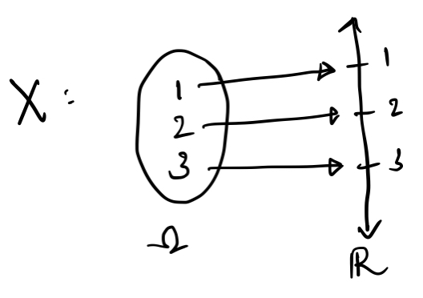

A Note on Random Variables
Posted on Fri 03 December 2021 in Mathematics
$\newcommand{\triple}{(\Omega, \mathcal{F}, \mathbf{P})}$$\newcommand{\P}{\mathbf{P}}$ This note on random variables follows as a result of confusing notation in several math textbooks. I'll explain random variables (in measure theoretic terms) as verbosely as I can, and then prove some results. This article assumes that the reader is familiar with probability triples $\triple$, as well as a basic idea of what random variables are, in non-measure theory terms.
1. Random Variable Prerequisites
We start with defining measurable spaces and measurable functions
Definition 1.1: A Measurable space $(X,\Sigma)$ consists of a set $X$ and a $\sigma$-algebra $\Sigma$ defined on $X$.
Definition 1.2: A Generated $\sigma$-algebra is the smallest $\sigma$-algebra containing a specified collection of sets. That is, if $A$ is a set of subsets of $X$, $\sigma(A)$ is the smallest sigma-algebra such that $A \subseteq \sigma(A)$.
Definition 1.3: A Measurable Function $f: (X,\Sigma) \to (Y,\Gamma)$ between two measurable spaces is a function such that for every $E \in \Gamma$, $\{x \in X\ |\ f(x) \in E\} \in \Sigma$.
Since the definition $\{x \in X\ |\ f(x) \in E\}$ is used so commonly in the context of measurable functions, this has a special notation
Definition 1.4: $$f^{-1}(E) := \{x \in X\ |\ f(x) \in E\}$$
NOTE: The above definition is confusing, but is unfortunately the norm when dealing with measurable functions. In the context of measurable functions, $f^{-1}$ does not refer to the inverse of $f$ (which is a function from $Y \to X$), but rather the set of preimages of all the elements contained in a set in the sigma algebra.
Measurable functions can also be defined in terms of the $\sigma$-algebra generated by a function, rather than that of a set
Definition 1.5: The $\sigma$-algebra generated by a function $f: (X,\Sigma) \to (Y, \Gamma)$ is the collection of all inverse images $f^{-1}(S),\ S \in \Gamma$. $$\sigma(f) := \{ f^{-1}(S) : S \in \Gamma \}$$
According to this definition, if $\sigma(f) \subseteq \Sigma$, then $f$ is a measurable function.
2. Random Variables
Random variables are unfortunately, neither random nor variables. This is the first of many misnomers that we encounter in their study.
Definition 2.1: A Random Variable $X$ defined on a probability triple $\triple$ is a measurable function $X : (\Omega, \mathcal{F}) \to (\mathbb{R}, \mathcal{B}(\mathbb{R}))$
In it's simplest terms, A random variable is simply a function from $\Omega \to \mathbb{R}$, obeying some 'nice' rules which allow us to use probability measures with it. These nice rules would come into play a bit later, after we first see how random variables and probability measures go hand in hand.
Consider $$\begin{align}\Omega &= \{1,2,3\}\\ \mathcal{F} &= 2^{\Omega} \\ \mathbf{P}&:\mathcal{F} \to [0,1]\end{align}$$ such that $\mathbf{P}\{1\} = \mathbf{P}\{2\} = \mathbf{P}\{3\}$ (This is the discrete uniform probability space on $\{1,2,3\}$). Let our random variable $X: \Omega \to \mathbb{R}$ map $\{i\}$ to $i$, $i \in \{1,2,3\}$. A graphical depiction of this would look something like this:

Now, suppose we had to calculate the probability that the random variable $X$ would be less than or equal to $2.5$. The probability of this event occuring is given by $\P\{\omega \in \Omega\ :\ X(\omega) \le 2.5\}$. From the inverse notation we developed in $\S$1.4, We can also write this as $\P(X^{-1}((-\infty, 2.5]))$. From the graph, we clearly see that $1$ and $2$ are the only elements in $\Omega$ that would be in this set, hence $\P\{1,2\} = 2/3$. This is how random variables and probability measures go hand in hand.
Why then, do random variables need to be measurable functions? Note that the probability measure is only defined for sets in $\mathcal{F}$, and if $X$ is not measurable, we cannot find the probability of certain events associated with $X$.
An example for this is to consider $$\begin{align}\Omega &= \{1,2,3\}\\ \mathcal{F'} &= \{\emptyset, \{1\}, \{2,3\}, \Omega\} \\ \mathbf{P}&:\mathcal{F'} \to [0,1]\end{align}$$ such that $\P\{1\} = 1/3$. Now consider $X': \Omega \to \mathbb{R}$ such that $X'(i) = i,\ i \in \Omega$. This is the same map as before. However, if we try to calculate the probability that $X$ is less than or equal to 2.5 now, we find that $\P\{1,2\}$ is undefined, as $\{1,2\} \not\in \mathcal{F'}$. Hence, $X'$ is not a random variable, as it is not measurable on $(\Omega, \mathcal{F'})$. More specifically, $\sigma(X) = 2^\Omega \not\subseteq \mathcal{F'}$, hence, $X'$ is not measurable
3. Results on Random Variables
Claim 3.1: If $X: \Omega \to \mathbb(R)$ is a random variable on $\triple$, then $X^{-1}(B) = A \implies X^{-1}(B^C) = A^C$.
A simple (maybe even obvious) claim, the proof is by definition: $$\begin{align} X^{-1}(B) &= A = \{\omega \in \Omega\ :\ X(\omega) \in B\} \\ \implies X^{-1}(B^C) &= \{\omega \in \Omega\ :\ X(\omega) \not\in B\} = A^C \end{align}$$
Claim 3.2: If $X = \mathbf{1}_A$ is the indicator of some event $A \in \mathcal{F}$, then $X$ is a random variable
Proof: for all $B \in \mathcal{B}(\mathbb{R})$, we have $X(B)$ equal to any one of $A$ (if $B$ contains 1 and not 0), $A^C$ (if $B$ contains 0 and not 1), $\emptyset$ (if $B$ contains neither 0 nor 1) or $\Omega$ (if $B$ contains both 0 and 1). Hence, $X$ is a random variable.
The next two claims would be key to proving results about functions of random variables
Claim 3.3: if $f: (\Omega_1, \mathcal{F}_1) \to (\Omega_2, \mathcal{F}_2)$ and $g: (\Omega_2, \mathcal{F}_2) \to (\Omega_3, \mathcal{F}_3)$ are two measurable functions, then $f \circ g : (\Omega_1, \mathcal{F}_1) \to (\Omega_3, \mathcal{F}_3)$ is also a measurable function
Proof: For all $B \in \mathcal{F}_3$, since $g$ is measurable, $g^{-1}(B) \in \mathcal{F}_2$. Since $f$ is measurable, $f^{-1}(g^{-1}(B)) \in \mathcal{F}_1$. Hence, $f\circ g$ is measurable.
Claim 3.4: $f: (\Omega_1, \mathcal{F}_1) \to (\Omega_2, \sigma(C))$ is measurable if $A \in C \implies f^{-1}(A) \in \mathcal{F}_1$.
Proof: Note that $f^{-1}(\Omega_2 \setminus A) = \Omega_2 \setminus f^{-1}(A)$, and $f^{-1}(\cup_n A_n) = \cup_n f^{-1}(A_n)$. This, along with the fact that $\mathcal{F}_1$ is a $\sigma$-algebra proves that $\{A : f^{-1}(A) \in \mathcal{F}_1\}$ is a $\sigma$-algebra containing $C$. Since $\sigma(C)$ is the smallest $\sigma$-algbra containing C, $\sigma(C)$ would be a subset of the above $\sigma$-algebra, hence the claim is true.
This above claim ensures that we don't need to prove that every set of a $\sigma$-algebra has a preimage in the previous $\sigma$-algebra. Proving it for only the generating set is enough eg. for $\mathcal{B}(\mathbb{R})$, it's sufficient to show that only the open sets have a preimage, something that we'll use in the next proof.
Claim 3.5: Every continuous function $f: \mathbb{R} \to \mathbb{R}$ is measurable.
Proof: from (3.4), it's sufficient to prove that for every open set $A$, $f^{-1}(A) \in \mathcal{B}(\mathbb{R})$. This follows from the continuity of $f$: $f$ is continuous iff $G$ is open implies that $f^{-1}(G)$ is also open. Hence, $f$ is measurable.
The above three claims give us the following very powerful result: every continuous function of a random variable is also a random variable. We can make a stronger claim, after proving the following claims as well:
Claim 3.6: If $X$ and $Y$ are random variables on $\triple$, then $X+Y$ and $XY$ are random variables as well
Proof: This cute proof comes from Rosenthal. It's sufficient to prove that $X+Y$ is a random variable on the collection of sets $(-\infty, x)$, as the generated $\sigma$-algebra of this collection is $\mathcal{B}(\mathbb{R})$. Hence, consider the set $\{\omega \in \Omega : X(\omega) + Y(\omega) < x\}$. From the density theorem, we can find a rational number in $(X, x-Y)$ (I've dropped the $(\omega)$, as it's implicit here). hence, $$\{X + Y < x\} = \bigcup_{\text{r rational}} (\{X \lt r\} \cap \{Y \lt x - r\})$$ Since all the elements in the union belong to $\mathcal{F}$ and since $\mathcal{F}$ is a $\sigma$-algebra, $X+Y$ is a random variable.
XY is also a random variable, as $XY = [(X+Y)^2 - (X^2+Y^2)]/2$, and a sum/function of random variables is a random variable, from the previous claims.
We are now free to extend the claim that every continuous function of a random variable is a random variable, to piecewise continuity: every piecewise continuous function of a random variable is also a random variable. If $f$ is piecewise continuous, then $f(X) = f_1(X) \mathbf{1}_{I_1} + f_2(X) \mathbf{1}_{I_2} + \ldots + f_n(X) \mathbf{1}_{I_n}$, where $f_j(X)$ are random variables as $f_j$ is continuous, and $I_j$ are disjoint intervals. From claim (3.6), $f(X)$ is a linear sum of random variables, and hence is also a random variable.
4. References
- Rosenthal, Jeffrey S. A First Look at Rigorous Probability Theory. World Scientific, 2006. Open WorldCat, http://public.ebookcentral.proquest.com/choice/publicfullrecord.aspx?p=5227675
- Lebanon, Guy, editor. Probability: The Analysis of Data ; Vol. 1. 2012. Available online at http://theanalysisofdata.com/probability/0_2.html
- Math StackExchange, Wikipedia, etc etc :)